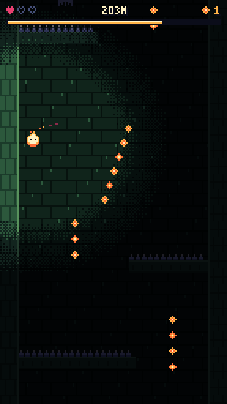
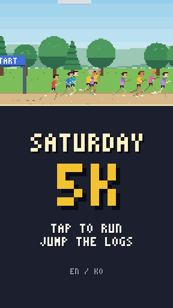

wasm32 · runs in your browser
WebAssembly Shelf
Small games and tools compiled to WebAssembly. Nothing to install: each one is a single page that loads its own binary.
-

Ember Well
A pixel-art descent RPG. Steer a lantern spirit down a dark well and collect embers before your light runs out. Includes three biomes, upgrades, four spirits and a daily well.
- C → wasm32
- 52 KB binary
- 144×256 px
- touch + keys
-

Saturday 5K
A pixel-art park race. Tap to run, jump the logs, roots, cones, dogs and puddles, and race the pacers, your own best-run ghost, or a friend on the same phone.
- Rust → wasm32
- 584 KB binary
- 180 px grid
- touch + keys
- EN · 한국어